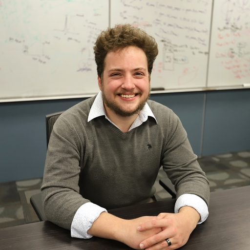

Press Kit
AJ Wildridge — Postdoctoral Researcher at Fermilab
Downloadable Assets

Professional Headshot
Original 512 × 512 photograph from AJ’s A3D3 profile.
Download JPEG
Short Biography
AJ Wildridge is a postdoctoral researcher at Fermilab in experimental high-energy particle physics whose work spans top-quark measurements, quantum-information observables, and machine-learning applications for collider data.
His current research includes spin-correlation and entanglement measurements in top-quark pair production, quantum-inspired reconstruction methods, and machine-learning tools for particle-physics discovery. He also works on the CMS Endcap Timing Layer (ETL). Wildridge regularly presents this work at workshops, conferences, and collaboration forums.
Contact Information
Email: anwildri@fnal.gov
Office: Wilson Hall, WH1167, Fermilab
Website: aj-wildridge.web.cern.ch
GitHub: @AWildridge
INSPIRE-HEP: author profile
Usage Guidelines
Media professionals are welcome to use these materials for press coverage, conference materials, or other professional purposes. Please credit appropriately and contact for any specific questions or custom requests.